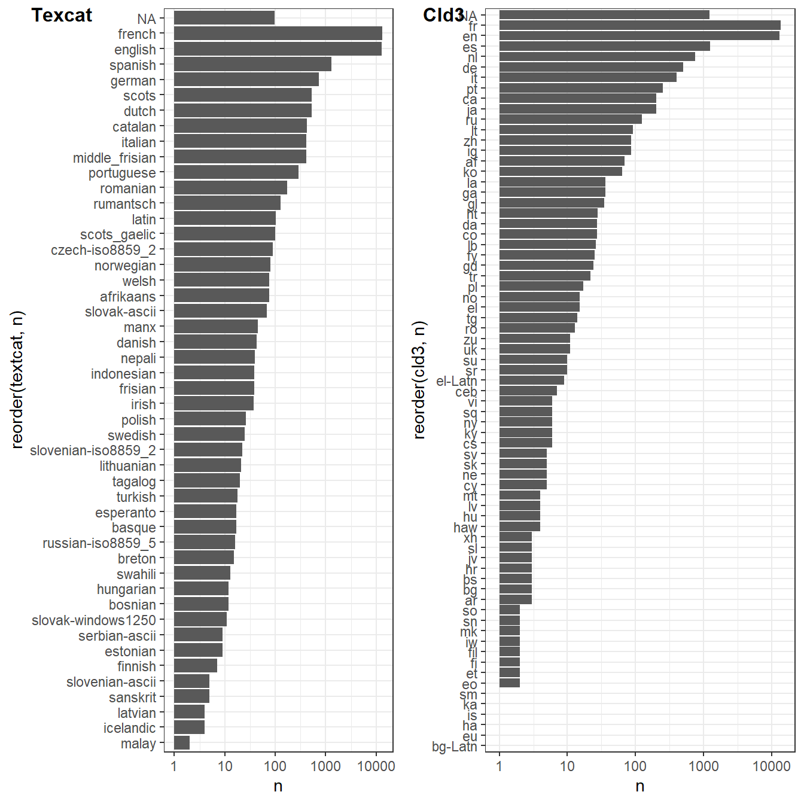
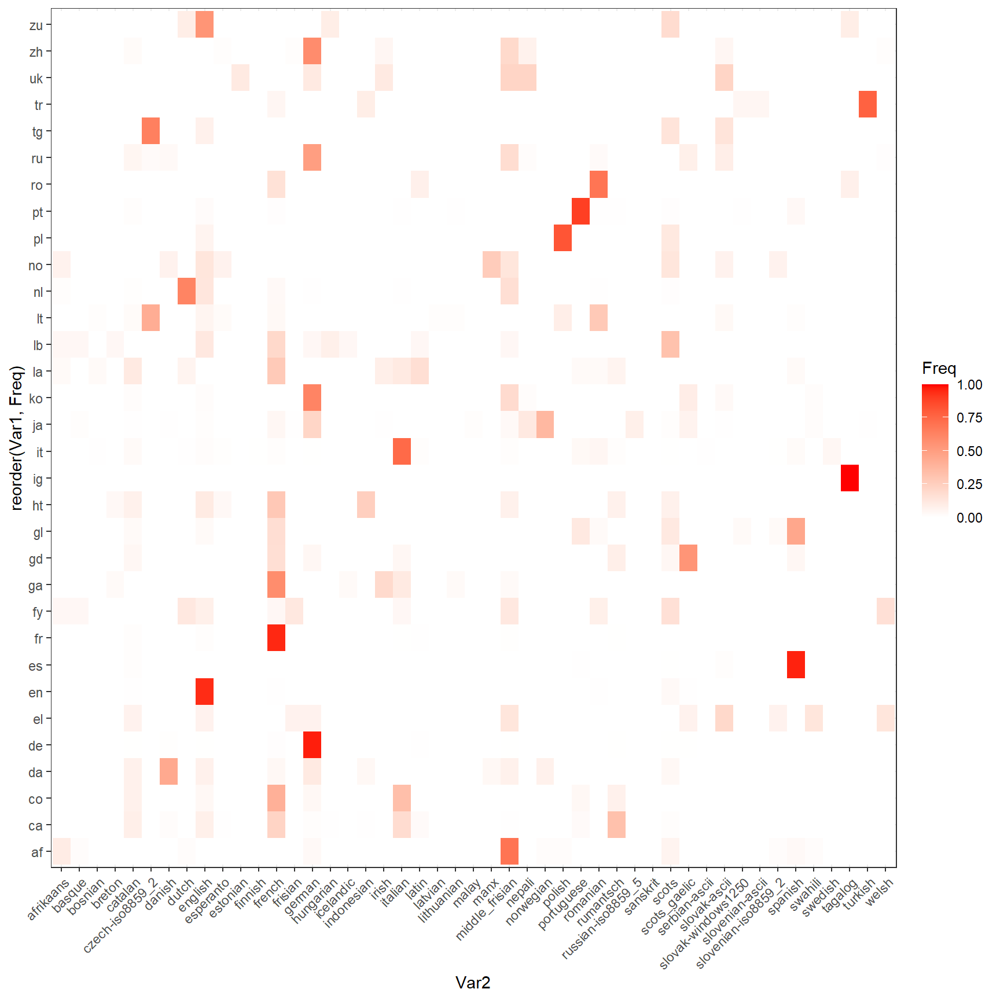
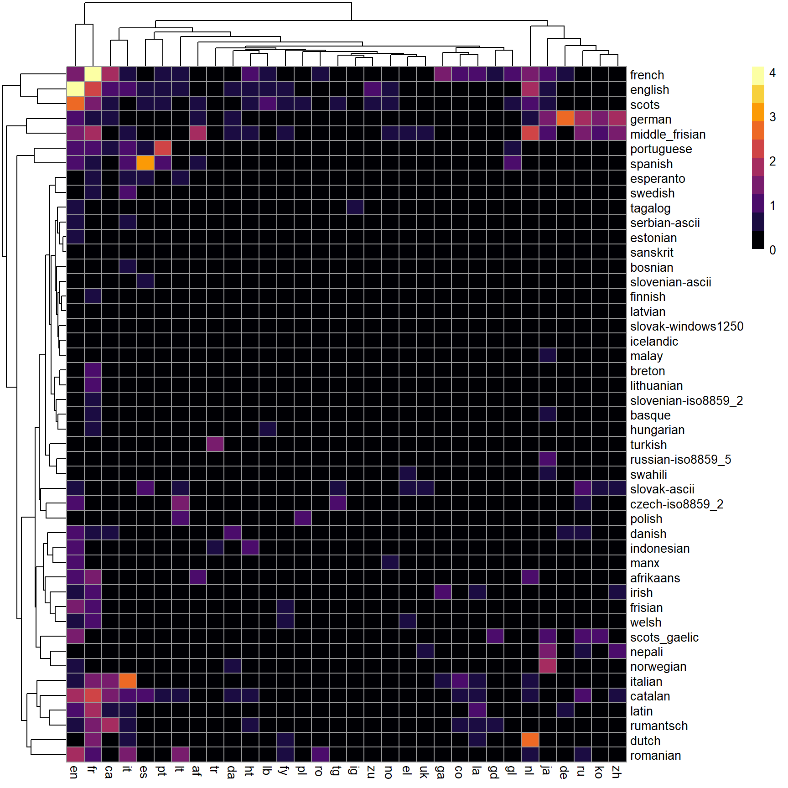
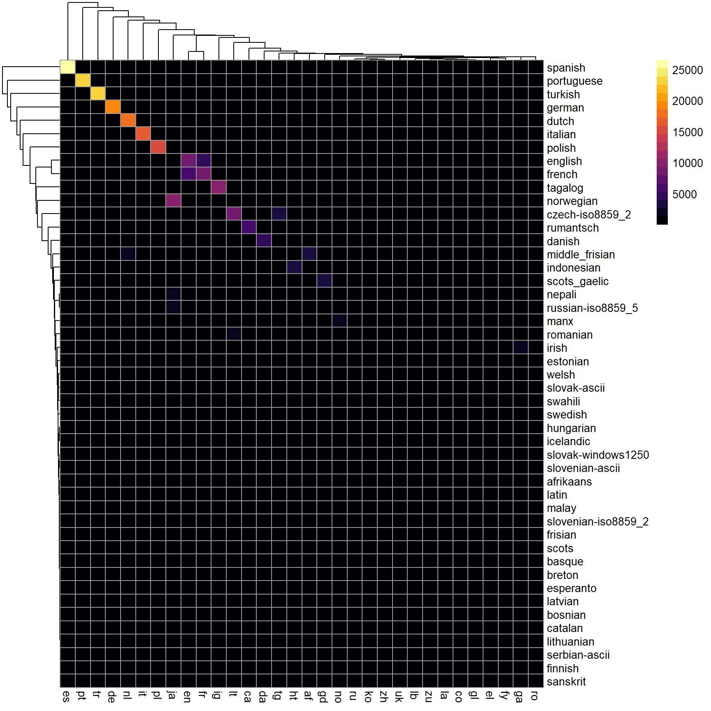

Chapitre 5 Préparation des données
Avant de se lancer dans l’analyse, il est nécessaire de préparer le texte, de le pré-traiter. Son format fondamental est celui d’une chaine de caractères, sans signification particulière mais composé à partir d’un alphbat, c’un jeux de signes déterminés et démobralement. 1/0 pour lelangage bianre, AGCP pour l’adan, 26 caractère de base pour l’alphabet, sans compter les accents.
Ces variations sont l’objet de convention en informatique. et de certaines opérations.
traiter du texte c’est avant tout disposer d’opérateurs pour manipuler ces éléments élémentaire. la base est d’avoir des outils pour les manipuler.
Le langage avant d’être signifiant est signifié, littéralement produit comme une chaine de signes qui dans l’usage suit certaine convention. Par exemple la satisfaction peut s’exprimé par mmmm, une forte satisfaction par un mmmmmmmmmmmmmmmmmmmmm. Pour distinguer les significations, il faut d’abord compter. les mmm sont sans doute courants car conventionnels (ce mot est à deux doigts d’être incorporé au dictionnaire de l’Académie Française, s’il n’était qu’une onomatopée), les “mmmmmmmmmmmmmmmmmmmmm” sont sans doute beaucoups plus rares. De plus on trouvera des “hum” des “hummm”, des ’mmmmhummmm". On comprend qu’à la nuance de l’intensité que le locuteur veut exprimer, toute ces morphologies se rapportent à une même idée.
Comment le rammener à une même formes est une question essentielle même si elle semble excessivement technique.
5.1 Manipuler des chaines de caractères
Il faut donc traiter le texte, avant même de s’engager dans des modèles compliqués. Il faut savoir traiter des chaines de caractères pour en réduire la diversité, et en produire des chaines grammaticalement exacte. C’est un travail d’artisan, celui des des imprimeurs et de leurs coorecteur. Et en particulier d’un métier celui du compositeur, ou ouvrier de la casse, qui distribue des caractères de plomb en séquences dans des casiers de bois.
{kind=link}
L’artisan n’avait pas de choix, la précision était essentielle pour éviter la coquille. Le texte moderne, numérique, est l’objet de plus d’aller et retours. Les mots qu’on pianotent sont corrigés avant même d’être frappés. Les gestes techniques sont différents mais s’articulent sur une même idée : la langue écrite, du moins les langues alphabétiques sont des chaines de caractères dont la formation suit des règles fluctuantes à travers l’histoire mais contraignante à chaque moments. Les conventiosn peuvent changer, mais dans son temps elle s’imposent définitivement. Personne n’écrirait “deffert”, pour dire “dessert”. Et pourtant la graphie du s était un f jusqu’au XVI ème siècle (trouver la source)! https://www.cairn.info/revue-la-linguistique-2003-1-page-3.htm
De nombreuses ressources sont disponibles pour traiter ces chaines de caractères.
On utilisera surtout Stringer qui est est un des composants essentiels de tidyverse. D’autres packages sont équivalents : stringi par exemple.
5.1.1 Les opérations sur les chaînes de caractères
- mettre en minuscule. L’alphabet se présente au moins en deux versions : des majuscules et des minuscules, il est souvent nécessaire de réduire le texte à une seule casse pour en réduire la variété, sauf si les majuscules signalent une information spécifique et socialement conventionnelle. Un mot qui débute par une majuscule signale un nom commun, désormais conceptualisé comme une entité nommée appartenant à différentes catégories : noms de lieux, noms de personnes, noms d’organisation …ou l’expression d’un sentiment, au sein des chats, la majuscule en série signale un niveau de langage “loud”, un cri , une engueulade, la véhémence.
- rechercher une chaine de caractères;
- remplacer une chaine de caractères
- extraire une chaine de caractère d’un emplacement à l’autre
- supprimer une chaine de caractères. Les nombres,
- concaténer des chaines de caractères. Le texte peut être divisés en unités. Un paragraphe par exemple, ou un titre.
Si la manipulation deslaquelle ? vaccin ?
5.1.2 La technique des expressions régulières (regex)
Il ne suffit pas de chercher une chaine de caractère particulière, il faut souvent saisir un ensemble de variations qui suivent un motif determiné et qui répond à une sorte de loi générale.
Par exemple si je veux retrouvrer dans un corpus l’ensemble des mots relatif au monde de l’hôpital, nous chercherions aussi le mot “hopital”. Nombreux seront les locuteur qui omeetent l’accent circonflexe. Une formule pour trouver ces deux varietés serait d’utiliser un opérateur, "(), pour définir une option . soit l’un soit l’autre : h(ô,o)pital
Une expression régulière est un masque qui permet d’identifier des formes principales et leurs variétés. Il s’appuit sur une codification dont quelques éléments clés permettent de se donner une bonne idée de la logique générale
le ^, indique que la forme commence par le caractère qui suit “^A”
le . signifie n’importe quel caractère. le regex “^a.” signifiera ainsi n’importe quelle chaine de caractère qui commence par a est est suivi de n’importe quel caractère.
le * la répétition indéfinie du caractère .
D’un point de vue linguistique les regex travaillent sur la morphologie et ses variations, indépendemment des règles de grammaires mais profitant de leur régularité.
Les mots sont généralement composés d’une racine, de suffixe et de préfixe qui contiennent les flexions grammaticales et sémantiques.
des exemples :
- la négation : visible et in-visible.
- la conjugaison : aime et aim-ât
- la numération : fraise et fraise-s
- le genre : épicier et épicière-s.
5.1.3 Un fondement profond et ancien
Le langage des regex a répondu d’abord aux besoin des informaticiens, et s’appuie sur une construction mathématique sophistiquée : les automatates finis https://swtch.com/~rsc/regexp/regexp1.html don t un des contributeurs essentiels à été
doi.org/10.1145/363347.363387 Ken Thompson
fondateur de Grepl
a method for locating specific character strings embedded in character text is described and an implementation of this method in the form of a compiler is discussed. The compiler accepts a regular expression as source language and produces an IBM 7094 program as object language. The object program then accepts the text to be searched as input and produces a signal every time an embedded string in the text matches the given regular expression. Examples, problems, and solutions are also presented.
5.1.4 Des applications très pratiques
et à ceux qui face à des questions de métier, par exemple les professionnel de marketing direct ou des services postaux, ont été amené à traiter de jeux de données textuels limités tel qu’une adresse postale.
dectecter une entité nommée : la majuscule
détecter une adresse
détecter une date
détecter un compte
détecter une url
5.2 Nettoyer le texte
- enlever les mentions
- enlever les url
- enlever ou recoder les emojis
- enlever la ponctuation
- enlever les nombres
5.3 Corriger le texte
Si certains corpus sont par les conditions de leur production presque parfait du point de vue grammatical et lexical, c’est le cas en principe des articles de presse et des documents officiels, d’autres qui s’appuient sur une langue vernaculaire on des graphies plus incertaines et des syntaxes approximatives. Dans un tiers des cas le mot " opinion" s’orthographie “opignons”. Chaque mot du lexique s’évanouit dans des morphologies nombreuses et approximatives.
C’est un obstacle à l’analyse car la variété morphologique est aléatoire.
plusieurs stratégies sont possibles. La première est de corriger le texte notamment en employant des outils de corrections efficaces.
5.3.1 La correction orthographique automatique
voir hunspell
https://cran.r-project.org/web/packages/hunspell/vignettes/intro.html#Custom_Dictionaries
5.3.2 Analyse ciblée par les regex
Une application des regex est l’analyse ciblée d’un certain nombre de termes. LA corection est partielle mais couvre les cibles essentielles
exemple des gestes barières dans le flux twitter
5.4 Identifier les sources
Les acteurs :
- Des professionnels de la politiques et les institutions qu’ils dirigent
- Journaliste et professionnels de la communication
- Experts et universitaires
- les marques et leur community manager
- les bots
- les trolls
- les activistes
- les acteurs de la vie politique
5.4.1 Identifier la langue
Dans l’analyse des contenus sociaux, les textes viennent de sources multiples et confuses. Elles peuvent être aisément multilingue. Analyser un corpus d’entretien, une collection de discours, pose peu la questions des locuteurs car ils sont bien identifiés. Ce n’est pas le cas dans les réseaux sociaux où les buts sont multiples et plus ou moins avoués. Les corpus peuvent être multi-langues. Par exemple, dans les corpus d’avis d’hôtes sur Airbnb, les avis sont formulés dans une large variété de langues. Il va falloir en tenir compte et une tâche préliminaire sera de détecter les langues pour séparer les corpus.
Le package textcat offre une solution basée sur la fréquence des ngrams (des suites de 2, 3, … n motsqu’on étudiera dans le Chapitre 4) et qui compare la distribution du texte ciblé avec celles des distributions typiques des langues.
(insérer le schema)
Google propose un algo plus sophistiqué : cld3, car fondé sur un réseau de neurones assez profond.
Comparons les. On utilise un jeu de donnée Airbnb à Bruxelles (été 2020), ville qui accueillant les institutions européennnes est une des plus cosmopolite qui soit avec des fonctionnaires venant de toute l’Europe, s’exprimant dans une large variété de langue, sans compter les représentations des autres pays du monde, publiques et privées.
En terme de durée de calcul, la différence en temps de calcul est faramineuse : 7 secondes contre 7 minutes, ce qui s’explique car texcat s’appuyant sur la distribution des ngrammes doit les calculer pour les 36000 observations que nous avons retenues.
BXL2021 <- read_csv("./data/reviewsBXL2021.csv")
BXL2021$Year<- as.numeric(format(as.Date(BXL2021$date, format="%Y-%m-%d"),"%Y"))
BXL2021<- BXL2021 %>% filter(Year>2019) # on filtre sur la période de confinement
#library(cld3)
t1<-Sys.time()
cld3<-as.data.frame(detect_language(BXL2021$comments))%>%rename(cld3=1)
t2<-Sys.time()
t_cld3<-t2-t1 #on calcule la durée de l'opération en faisant la différence du temps de départ et d'arrivée
#library(textcat)
t1<-Sys.time()
textcat<-textcat(BXL2021$comments)
t2<-Sys.time()
t_texcat<-t2-t1
foo<-cbind(cld3, textcat)Examinons les résultats et la distribution des langues identifiées par les deux systèmes. Si l’ordre est respecté, des différences s’observent, cld3 identifie du chinois qui ne fait pas partie du répertoire de texcat.
g1<-foo%>%mutate(n=1)%>%group_by(textcat)%>%summarise(n=sum(n))%>%
ggplot(aes(x=reorder(textcat,n), y=n))+geom_bar(stat="identity")+coord_flip()+scale_y_log10()
g2<-foo%>%mutate(n=1)%>%
group_by(cld3)%>%
summarise(n=sum(n))%>%
ggplot(aes(x=reorder(cld3,n), y=n))+ geom_bar(stat="identity")+coord_flip()+scale_y_log10()
plot_grid(g1, g2, labels = c('Texcat','Cld3'), label_size = 12)
Examions maintenant la convergence des méthodes en représentant la répartition du résultat d’un système dans les langue de l’autre. Si la convergence est parfaite 1000% des textes classé en Français par Textact devrait se retrouver dans 100% de ces textes classé par cld3 et réciproquement.
foo1 <-foo %>% mutate(n=1)%>%group_by(textcat) %>%summarise(n=sum(n))
foo1<-foo%>% left_join(foo1) %>% filter(n>10)
table<-table(foo1$cld3,foo1$textcat)
foo1<-as.data.frame(prop.table(table,2))
ggplot(foo1, aes(reorder(Var2, Freq),Var1)) +
geom_tile(aes(fill = Freq)) +
scale_fill_gradient(low = "White",high = "Blue")+
theme_bw()+ theme(axis.text.x=element_text(angle = 45, hjust =1))+coord_flip()
foo1 <-foo %>% mutate(n=1)%>%group_by(cld3) %>%summarise(n=sum(n))
foo1<-foo%>% left_join(foo1)%>%filter(n>10)
table<-table(foo1$cld3,foo1$textcat)
foo1<-as.data.frame(prop.table(table,1))
ggplot(foo1, aes(reorder(Var1, Freq),Var2)) +
geom_tile(aes(fill = Freq, label=Freq)) +
scale_fill_gradient(low = "White",high = "Red")+
theme_bw()+ theme(axis.text.x=element_text(angle = 45, hjust =1))+coord_flip()
table2<-as.data.frame(table) %>%
mutate(Freq=log10(Freq+1)) %>%
pivot_wider(names_from = Var1, values_from = Freq) %>%
column_to_rownames( var = "Var2")
pheatmap(table2 , color = inferno(10))
chi2<- chisq.test(table)
chi2<- as.data.frame(chi2$residual)
table2<-chi2 %>% mutate(Freq=Freq^2)%>%
pivot_wider(names_from = Var1, values_from = Freq) %>%
column_to_rownames( var = "Var2")
pheatmap(table2 , color = inferno(20, direction=1))
5.4.2 Identifier les plagiats et réutilisations
Dans la définition du corpus il peut être utile de se concentrer sur les contenus originaux
Une autre question est de detection les contenus riginaux des contenu réutilisés ou carrément plagiés.
https://github.com/ropensci/textreuse
https://journal.r-project.org/archive/2020/RJ-2020-017/index.html
5.4.3 Identifier les fakes
https://github.com/sherylWM/Fake-News-Detection-using-Twitter
5.4.4 Identifier les trolls
5.4.5 Identifier les bots
botometer botchecks
pour un benchmark
https://rpubs.com/xil865/528096
detecter les fakes https://blogs.rstudio.com/ai/posts/2020-08-18-deepfake/